2 Corporate Presence Web Wizard
Nah, sampai di sini Anda bisa merasakan kemudahan yang disediakan FrontPage
XP. Anda akan lebih bersyukur kalau membuka kode-kode HTML nya. Bisa Anda
bayangkan berapa waktu yang dibutuhkan kalau harus harus menyusun sendiri kodekode
tersebut. Sedangkan dengan FrontPage XP pekerjaan itu hanya perlu beberapa
menit dan yang dilakukan hanya klik sana klik sini.
Baiklah, sekarang mari kita coba wizard yang lebih canggih, yaitu Corporate
Presence Web Wizard. Wizard yang satu ini akan membantu kita membuat
sebuah situs Web yang terintegrasi dengan item-item yang kita pilih. Item-item
tersebut antara lain What's New, Products, Services, Table of Contents, Feedback
Form dan Search Form. Wizard juga menyediakan sarana pemilihan berbagai
tampilan, seperti Plain, Conservative, Flashy, ataupun Cool. Langkah
pembuatannya adalah:
1. Aktifkan File _ New _ Page or Web …Task Pane aktif.
2. Klik icon Web site Templates. Muncul kotak dialog New from Templates.
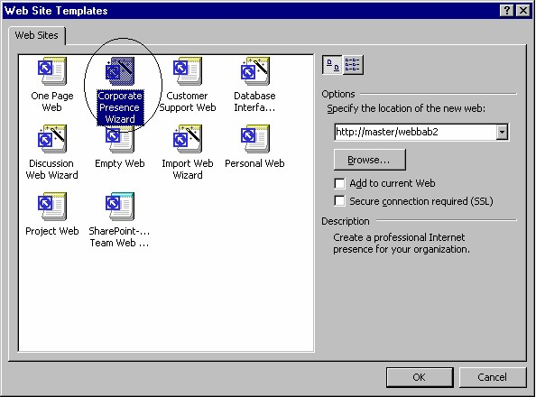
Gambar 3.7 Icon Corporate Presence Wizard
3. Klik icon Corporate Presence Wizard. Lalu pada kotak isian Specify the
location of the new web, tuliskan URL web site Anda. Dalam contoh ini,
http://master/web2Corporate.
4. Klik OK, wizard dijalankan dengan kotak dialog pertama seperti Gambar 2.8
sebelah kiri.
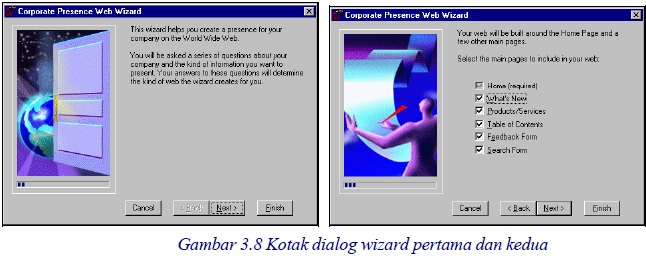
5. Pada kotak dialog pertama klik Next, tampil kotak dialog wizard kedua (Gambar
3.8 sebelah kanan). Kotak dialog kedua menyediakan sarana pemilihan itemitem
untuk halaman web Anda.
Item-item tersebut antara lain What’s new, Product/Service, Table of
Contents, Feedback Form dan Search Form. Berikut ini keterangan masingmasing
item:
• What’s new. Untuk menampilkan fasilitas baru produk perusahaan kita.
• Product/Service. Untuk menampilkan keterangan tentang produk atau
layanan perusahaan kita seperti informasi, spesifikasi, model, harga dan
sebagainya.
• Table of Contents. Untuk membuat daftar isi halaman situs yang sedang
kita susun.
• Feedback Form. Menyediakan formulir umpan balik dari pemakai produk
kita.
• Search Form. Menyediakan sarana pencarian teks pada situs yang meliputi
ke seluruh halaman.
6. Klik pilihan Anda lalu klik Next, tampil kotak dialog ketiga (Gambar 3.9).
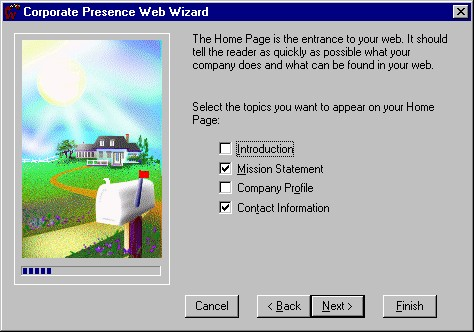
Gambar 3.9 Kotak dialog ketiga
Kotak dialog ketiga meneyediakan sarana pemakaian Introduction, Mission
Statement, Company Profile dan Contact Informtion.
• Introduction. Untuk membuat teks salam jumpa dan salam perkenalan
untuk menyapa para konsumen kita
• Mission Statement. Untuk menampilkan misi perusahaan kita, yaitu tujuan
yang ingin diraih oleh perusahaan kita.
• Company Profile. Menampilkan informasi tentang perusahaan kita,
meliputi bidang usaha, jenis produk, riwayat perusahaan, personil, asset
perusahaan dan lain lain.
• Contact Informtion. Untuk menampilkan nama, alamat, metode, sarana dan
data-data untuk mengakses perusahaan.
7. Klik pilihan yang ingin Anda sertakan ke halaman web. Lalu klik Next, tampil
kotak dialog keempat (Gambar 3.10).
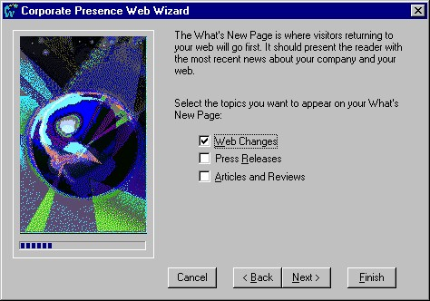
Gambar 3.10 kotak dialog keempat
Kotak dialog keempat menyediakan sarana pemilihan Web Changes, Press
Releases dan Articles and Reviews.
• Web Changes, sarana pengubahan web.
• Press Releases, tampilan yang sesuai untuk pengumuman pers.
• Articles and Reviews, untuk menampilkan informasi tentang majalah atau
artikel yang mendukung perusahaan.
8. Klik pilihan yang ingin Anda sertakan ke halaman web. Klik Next, tampil kotak
dialog kelima (Gambar 3.11).
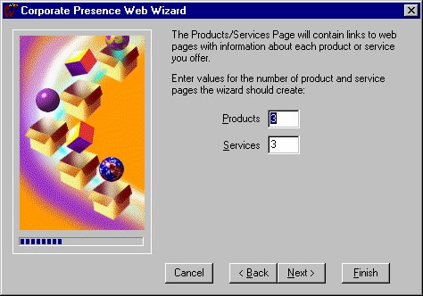
Gambar 3.11 Kotak dialog kelima
Kotak dialog kelima menyediakan sarana pengisian jumlah halaman untuk
produk perusahaan Anda dan jumlah halaman untuk servis yang diberikan
perusahaan.
9. Isikan jumlah halaman untuk masing-masing item tersebut. Lalu klik Next,
tampil kotak dialog keenam (Gambar 3.12).
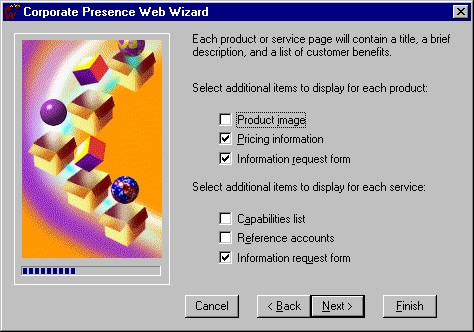
Gambar 3.12 Kotak dialog keenam
Kotak dialog keenam menyediakan sarana pemilihan item-item bagi produk dan
servis perusahaan Anda, antara lain:
• Product image
Sarana penulisan image produk yang sangat berperanan dalam pemsaran
produk
• Pricing information
Untuk menampilkan daftar harga dan paket-paket produk perusahaan
• Information request form
Menyediakan form untuk umpan balik bagi perusahaan
• Capabilities list
Daftar kemampuan produk
• Reference accounts
daftar account yang bisa diakses untuk keperluan transfer
• Information request form
Menyediakan form untuk umpan balik bagi perusahaan
10. Tentukan pilihan Anda, lalu klik Next. Tampil kotak dialog ketujuh (Gambar
3.13).
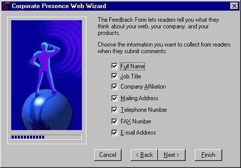
Gambar 3.13 Kotak dialog ketujuh
Kotak dialog ketujuh berfungsi untuk pemilihan item pada formulir umpan balik.
Item tersebut antara lain nama, jabatan, alamat surat, nomor telepon, nomor
fax dan alamat e-mail.
11. Klik pilihan item dan klik Next, tampil kotak dialog kedelapan.
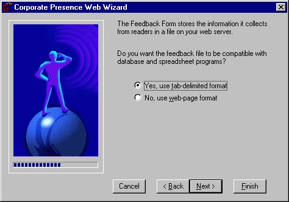
Gambar 3.14 Kotak dialog kedelapan
Kotak dialog kedelapan berguna untuk penentuan apakah form umpan balik bisa
kompatibel dengan program database (misalnya MS Acces) atau program
spreadsheet (misalnya MS Excel). Fasilitas ini sangat berguna untuk pengaturan
umpan balik yang seringkali berjumlah amat besar.
12. Jangan mengubah pilihan dari Yes, use tab-delimited format, lalu klik Next.
Tampil kotak dialog kesembilan (Gambar 3.15).
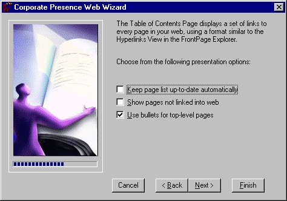
Gambar 3.15 Kotak dialog kesembilan
Kotak dialog kesembilan menyediakan sarana pemeliharaan situs web Anda.
13. Untuk sementara biarkan seperti apa adanya, yaitu pilihan ketiga yang aktif, lalu
klik Next. Tampil dialog kesepuluh (Gambar 3.16).
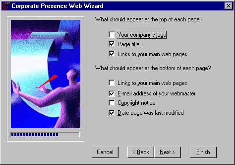
Gambar 3.16 Kotak dialog kesepuluh
Kotak dialog kesepuluh menanyakan item yang akan dipakai sebagai header dan
footer tiap halaman.
14. Tentukan pilihan Anda, klik Next. Tampil dialog kesebelas.
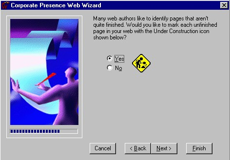
Gambar 3.17 Kotak dialog kesebelas
Kotak dialog kesebelas tentang pemilihan icon untuk penandaan bahwa halaman
sedang dibangun.
15. Sebaiknya pilihlah Yes, lalu next. Tampil dialog keduabelas.
Gambar 3. 18 Kotak dialog keduabelas
16. Kotak dialog keduabelas menyediakan sarana untuk pengisian nama perusahaan
dan alamatnya.. Isikan data-data dan informasi tersebut pada kotak isian yang
bersangkutan. Tentu saja data yang sesuai dengan keinginan Anda. Lalu klik
Next, tampil kotak dialog ketigabelas.
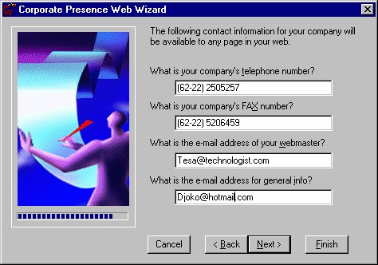
Gambar 3.19 Kotak dialog ketigabelas
17. Kotak dialog ketigabelas untuk pengisian telepon, fax dan e-mail. Isikan
datanya sesuai kondisi pada perusahaan Anda. Kik Next akan membuka kotak
dialog keempat belas untuk penentuan tema tampilan (Web Theme).
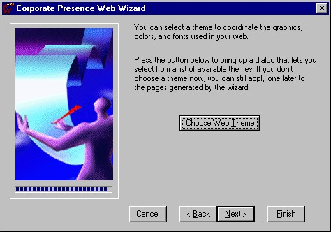
Gambar 3.20 Kotak dialog keempat belas
18. Klik tombol Choose Web Theme , tampil pemilihan Theme (Gambar 3.21).
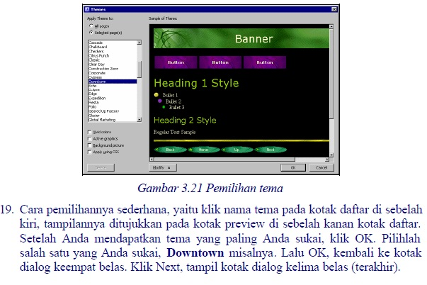
Gambar 3. 22 Kotak dialog terakhir
20. Klik Finish, FrontPage XP akan bekerja keras mewujudkan keinginan kita
(berdasarkan pilihan-pilihan tersebut), sementara kita tinggal santai menunggu
hasilnya. Setelah selesai, FrontPage XP akan menampilkan susunan folder
maupun halaman situs. Klik ganda halaman default.htm yang merupakan
halaman Home Page situs tersebut. Home Page adalah halaman yang akan
ditampilkan pertama kali di dalam situs. Hasilnya seperti Gambar 3.23.
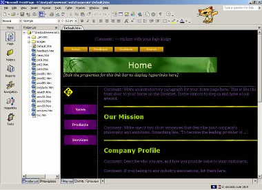
Gambar 3.23 Home Page Corporate Presence
Pekerjaan selanjutnya adalah mengdit isinya, baik teks, gambar atau objek
lainnya, disesusaikan dengan data-data dan informasi perusahaan kita.
Seperti tampak pada Folder List, terlihat bahwa situs web yang dihasilkan
memiliki 16 halaman, yaitu Home, Feedback, Contents, Search, News,
Products, Services, Products (1,2,3), Services (1,2,3) dan Press Release (1,2,3).
Berikut ini keterangan beberapa halaman yang penting:
• Home
Menampilkan indormasi singkat tentang layanan yang disediakan oleh
perusahaan Anda. Tentu saja tersedia tombol-tombol navigasi dan daftar
halaman lain yang bisa dibuka.
• Feedback
Adalah semacam kotak saran yang menyediakan sarana umpan balik
terhadap produk kita.
• Contents
Adalah daftar isi halaman-halaman dalam situs perusahaan kita.
• Search
Halaman yang menediakan sarana pencarian data teks tertentu yang ada pada
situs perusahaan kita.
• News
Menyampaikan daftar perubahan atau perbaikan fasilitas layanan yang ada
pada versi terakhir. Cara memperbarui, jadwal produk baru, dan problem
serta pemecahannya.
• Products dan Services
Adalah halaman yang menyampaikan informasi tentang produk dan layanan
yang disediakan perusahaan kita.
Berikut ini dua tampilan halaman pada browser:
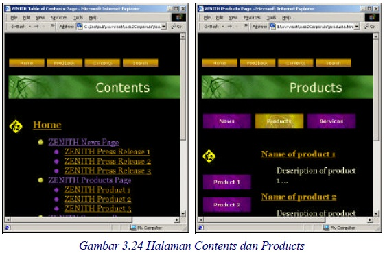
Copyright © Herlan Lesmana
Created with the Freeware Edition of HelpNDoc: Free Web Help generator